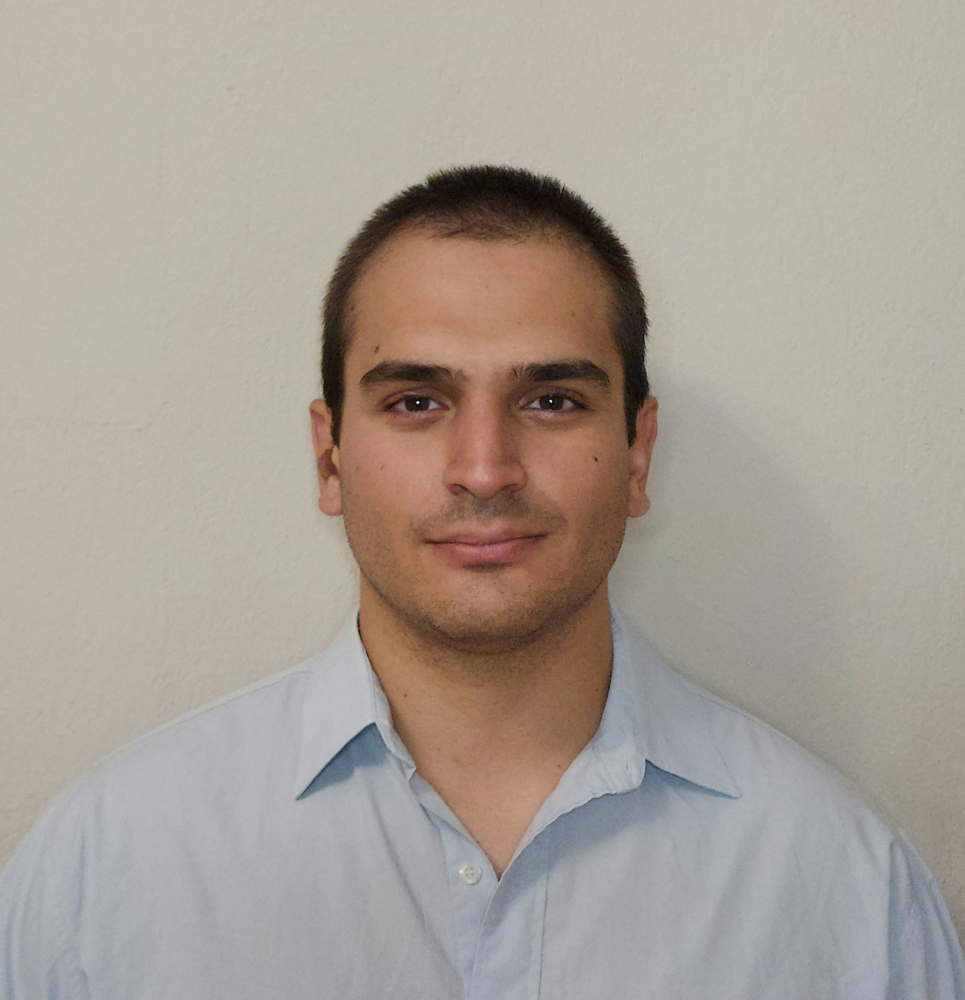

George Moutsos

Summary
Proven customer service skills through effective problem solving and interdepartmental collaboration.
Experienced in fast-paced environments, with a track record of enhancing operational efficiency. I am currently pursuing a Master's in Information Technology and Applications at the University of West Attica.
My background enables me to approach problems from both strategic and analytical angles.
Experience
Customer Service Coordinator
KARAG the bathroom experience | Full-time | Nov 2023 - Jun 2024 | Serrai, Central Macedonia, Greece
- Collaborated with internal teams to provide comprehensive support in promoting and selling integrated bathroom products.
- Assisted in managing customer inquiries, addressing concerns, and ensuring customer satisfaction.
- Played a key role in maintaining and updating customer accounts, ensuring accurate and up-to-date information.
Waiter
Poseidonio Restaurant | Seasonal | May 2022 - Sep 2023 | Kaválla, Eastern Macedonia and Thrace, Greece
- Served as a waiter during the summer seasons of 2023 and 2024 at Poseidonio restaurant.
- Collaborated with the kitchen and bar staff to ensure smooth and efficient service.
- Demonstrated strong communication and interpersonal skills in a fast-paced and dynamic restaurant environment.
Administrative Secretary
Cosmos Nautical Training Center | Internship | Jul 2017 - Sep 2017 | Piraeus, Attiki, Greece
- Efficiently managed office communications and schedules, serving as the first point of contact for incoming calls, emails, and visitor inquiries, enhancing overall office efficiency.
- Maintained a high level of organization by updating and managing both digital and physical filing systems, which improved record-keeping accuracy and retrieval speed.
Eduation
University of West Attica
Master's degree | Information Technology and Applications | 2024 - 2026
International Hellenic University
Master's degree | Business Administration (MBA) | 2022 - 2024
University of the Aegean
Bachelor's degree | Shipping Trade and Transport | 2015 - 2021
Certifications
- C2 English Language Proficiency | Michigan State University
- European Computer Driving Licence (ECDL) | UCERT GREECE
Skills
- Python (Programming Language)
- SQL
- C (Programming Language)
- Wordpress
- IBM SPSS
- Microsoft Office
- Entersoft
- Wireshark
- HTML
Other